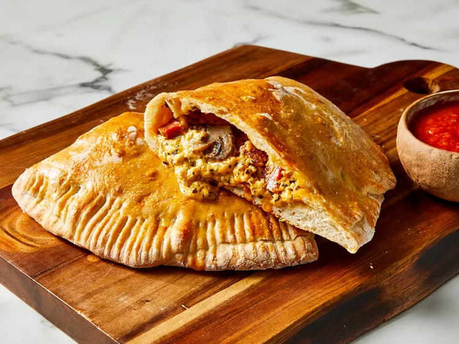
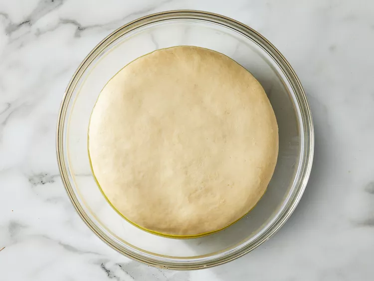
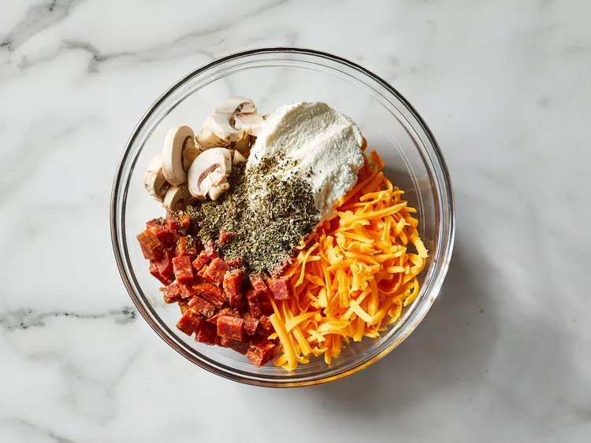
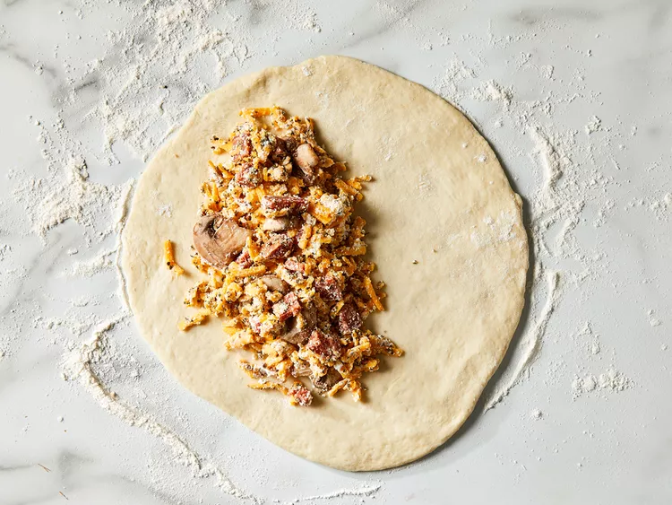
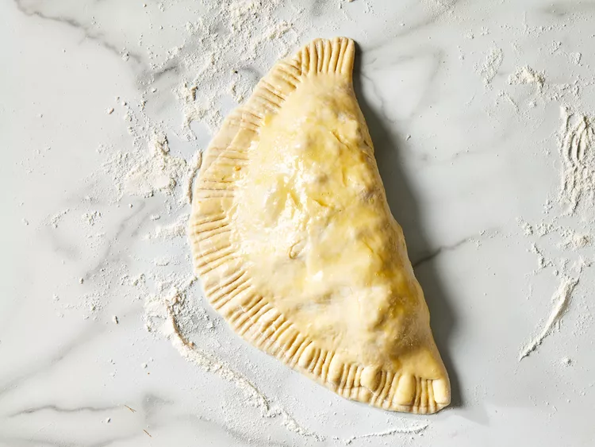

Real Italian Calzones

Description
A calzone is a savory Italian turnover. It traditionally consists of a cheesy filling in a leavened dough and is served with marinara sauce on the side. The calzone originated in Naples in the 18th-century. Calzones have Italian origins and are sealed with a fork. The sauce is traditionally served on the side.
Real Italian Calzones Ingredients
- 1 (.25 ounce) package active dry yeast
- 1 cup warm water
- 1 tablespoon olive oil
- 1 teaspoon white sugar
- 1 teaspoon salt
- 2 ½ cups all-purpose flour, plus more for dusting
- 1 teaspoon olive oil
- 1 large egg, beaten
Filling:
- 1 ½ cups shredded Cheddar cheese
- ½ cup ricotta cheese
- ½ cup diced pepperoni
- ½ cup sliced fresh mushrooms
- 1 tablespoon dried basil leaves
Step To Prepare The Real Italian Calzones
Step 1
-
Make dough: Dissolve yeast in warm water in a mixing bowl; let sit until foamy, about 5 minutes. Add 1 tablespoon oil, sugar, and salt; mix in 1 cup flour until smooth. Gradually stir in remaining flour until dough is smooth and workable.
Step 2
-
Turn dough out onto a lightly floured surface. Knead dough until it is elastic, about 5 minutes. Place 1 teaspoon olive oil in a large bowl; lay dough in the bowl and flip to coat with oil. Cover and let rise until almost doubled in size, about 40 minutes.

Step 3
-
Meanwhile, make the filling: Combine Cheddar cheese, ricotta cheese, pepperoni, mushrooms, and basil leaves in a medium bowl. Mix well, cover, and refrigerate to chill.

Step 4
-
Preheat the oven to 375 degrees F (190 degrees C). Grease a baking sheet.
Step 5
-
Punch down dough; divide into 2 equal pieces. Roll each piece out on a lightly floured surface into 1/8-inch-thick circles. Fill each circle with 1/2 of the cheese and meat filling.

Step 6
-
Fold dough over filling to make a semicircle. Press edges down with the tines of a fork to seal. Brush the top of each calzone with beaten egg and place on the prepared baking sheet.

Final Step
-
Bake in the preheated oven until golden brown, about 30 minutes. Serve hot.